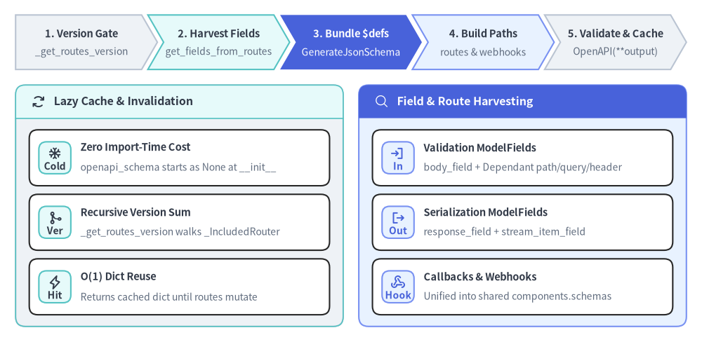
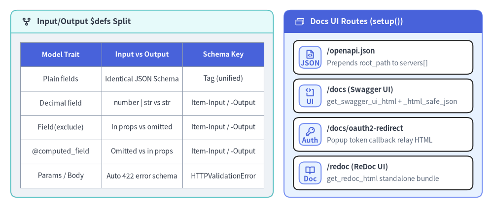

Lazy get_openapi(), JSON Schema $defs & Docs UI
FastAPI treats OpenAPI 3.1.0 (backed by JSON Schema Draft 2020-12) as a first-class compilation target rather than a hand-written YAML artifact. Instead of paying JSON Schema generation costs during Python module import, FastAPI.openapi() lazily synthesizes and memoizes the entire document on first access, invalidating the cache automatically whenever routes or included APIRouter trees mutate.

1. Lazy Memoization and _openapi_routes_version Invalidation
In fastapi/applications.py, FastAPI.__init__() sets self.openapi_version = "3.1.0", self.openapi_schema = None, and self._openapi_routes_version = None. No Pydantic JSON Schema adapters are invoked while routers and endpoints are being registered.
When app.openapi() is called (either directly in user/test code or by an HTTP GET /openapi.json request), it checks two invariants before returning self.openapi_schema:
- Cold Cache Check (
not self.openapi_schema): Synthesizes the full OpenAPI dictionary on the very first call and caches it onself.openapi_schema. - Recursive Route-Mutation Check (
self._openapi_routes_version != routes_version): Callsself.router._get_routes_version()infastapi/routing.py. EveryAPIRoutermaintains a monotonically increasingself._routes_versioncounter incremented by_mark_routes_changed()insideadd_route(),add_api_route(),add_websocket_route(),include_router(), andfrontend(). Crucially,_get_routes_version(seen)recursively sums_routes_versionacross every nested_IncludedRouter(usingseen: set[int]to guard against router cycles), so adding a route dynamically to an already-included childAPIRouterautomatically invalidates the rootFastAPIOpenAPI cache!
2. Inside get_openapi(): Field Harvesting, FieldMap, and $defs Deduplication
get_openapi() in fastapi/openapi/utils.py coordinates with fastapi/_compat/v2.py and fastapi/openapi/constants.py across five deterministic passes:
- Harvesting All
ModelFields (get_fields_from_routes()): Walksrouting.iter_route_contexts(list(routes) + list(webhooks or [])), inspecting everyAPIRoutewithinclude_in_schema=True. For each route, it collects request-side fields (body_fieldandget_flat_params(api_route.dependant), all carryingmode="validation"), response-side fields (response_field, additionalresponse_fields.values(), andstream_item_fieldfor JSONL/SSE generators, all carryingmode="serialization"), and recursively harvestsapi_route.callbacks. - Flattening Nested Types (
get_flat_models_from_fields()&get_model_name_map()): Recursively traverses generic annotations, unions,BaseModelfields, andEnumsubclasses to build the completeTypeModelSet, normalizing schema keys viare.sub(r"[^a-zA-Z0-9.\-_]", "_", name). - Single-Pass
$defsGeneration (get_definitions()&GenerateJsonSchema): Infastapi/_compat/v2.py,get_definitions()instantiates FastAPI'sGenerateJsonSchema(ref_template=REF_TEMPLATE)subclass (whereREF_TEMPLATE = "#/components/schemas/{model}"andbytes_schema()emitscontentMediaType: "application/octet-stream"). BecauseModelField.__hash__returnsid(self), every(ModelField, mode)pair acts as a unique lookup key ininputs. Passing all collected fields and nested models intoschema_generator.generate_definitions(inputs=inputs)produces two structures in a single Pydantic pass:field_mapping(FieldMap): Maps each(ModelField, "validation" | "serialization")tuple to its inline JSON Schema or{"$ref": "#/components/schemas/..."}pointer.definitions: The deduplicated global dictionary of named component schemas (with form-feed\fcharacters stripped from model docstrings viadescription.split("\f")[0]).
- Operation, Callback, Webhook & Streaming Synthesis (
get_openapi_path()):- Dependency & Security Graph:
_get_openapi_dependency_data(route.dependant)walks theDependantDAG once per route (deduplicating via_get_cache_key), while_get_openapi_security_definitions()merges OAuth2 scopes perscheme_nameintocomponents["securitySchemes"]and per-operationsecurityarrays. - Parameters, Request Bodies &
422Schemas:_get_openapi_operation_parameters()ensuresrequired=Trueparameter declarations override optional duplicates on(in, name). Methods inMETHODS_WITH_BODY(GET,HEAD,POST,PUT,DELETE,PATCH) attachrequestBodyschemas, and any operation accepting parameters or a body automatically receives a422response referencing#/components/schemas/HTTPValidationErrorandValidationError. - Streaming, Callbacks & Webhooks: Generator routes with
is_json_streamemitapplication/jsonlitemSchema, whileis_sse_streamroutes emittext/event-stream_SSE_EVENT_SCHEMA(contentMediaType: "application/json",contentSchema). Per-routecallbacksrecurse intoget_openapi_path(), andapp.webhooks.routespopulate top-level OpenAPI 3.1output["webhooks"].
- Dependency & Security Graph:
- Pydantic Self-Validation (
OpenAPI(**output)): After sortingcomponents["schemas"]alphabetically,get_openapi()validates the assembled dictionary againstfastapi.openapi.models.OpenAPI(Schema,PathItem,Operation,Components) and serializes it viajsonable_encoder(..., by_alias=True, exclude_none=True).
3. separate_input_output_schemas and Interactive Docs UI (docs.py)

When Model-Input and Model-Output Split vs Coalesce
With separate_input_output_schemas=True (default), get_definitions() feeds request ModelFields into GenerateJsonSchema with mode="validation" and response ModelFields with mode="serialization". Crucially, Pydantic only emits -Input and -Output suffixed schemas when the two JSON Schemas actually differ:
- Coalesced (
#/components/schemas/Tag): When every field produces the exact same validation and serialization JSON Schema,GenerateJsonSchemadeduplicates both modes into a single"Tag"component—avoiding redundant schema bloat for simple DTOs. - Split (
#/components/schemas/Item-Input&Item-Output): Whenever input and output representations diverge—for example,Decimal(acceptsnumber | stringon input, serializes asstring),Field(exclude=True)(accepted on input, omitted on output),@field_serializerchanging return types,@computed_field(present only on output), orConfigDict(json_schema_serialization_defaults_required=True)—Pydantic emits distinctItem-InputandItem-Outputdefinitions so generated TypeScript/Python SDK clients receive exact request and response types. _has_computed_fields()Safeguard: Even if an application opts out viaFastAPI(separate_input_output_schemas=False),_has_computed_fields(field)infastapi/_compat/v2.pyinspectsfield._type_adapter.core_schemaforcomputed_fieldsand still preservesmode="serialization"on those models so@computed_fieldproperties remain documented in responses.
Automatic Docs UI Generators (FastAPI.setup() & fastapi/openapi/docs.py)
At the end of FastAPI.__init__(), self.setup() registers up to four hidden documentation routes (include_in_schema=False) gated on self.openapi_url (setting openapi_url=None disables all four):
GET {openapi_url}(/openapi.json): Invokesself.openapi(). Ifreq.scope.get("root_path")is non-empty (e.g., behind a reverse proxy orMount) andself.root_path_in_servers=True, it shallow-copies the cached dict and prepends{"url": root_path}toschema["servers"]when not already listed.GET {docs_url}(/docsviaget_swagger_ui_html()): Mergesswagger_ui_default_parameterswithself.swagger_ui_parametersand renders anHTMLResponsebootingSwaggerUIBundle(swagger-ui-dist@5). All embedded JSON configuration keys, parameter values, andinit_oauthpayloads pass through_html_safe_json(), which escapes<,>, and&into\u003c,\u003e, and\u0026so untrusted strings cannot break out of the inline<script>block.GET {swagger_ui_oauth2_redirect_url}(/docs/oauth2-redirectviaget_swagger_ui_oauth2_redirect_html()): Serves the OAuth2 popup callback page that verifiesqp.state === sentStateand forwards authorization codes or tokens towindow.opener.swaggerUIRedirectOauth2.GET {redoc_url}(/redocviaget_redoc_html()): Renders<redoc spec-url="{openapi_url}"></redoc>backed by theredoc@2standalone bundle and optionalMontserrat/RobotoGoogle Fonts.
4. Verifying Lazy Caching, Router Invalidation, and Schema Divergence
The snippet below verifies cold-start lazy memoization, automatic cache invalidation when a route is added to an already-included APIRouter, and selective Item-Input / Item-Output splitting alongside a unified Tag component:
from decimal import Decimal
from fastapi import APIRouter, FastAPI
from pydantic import BaseModel, Field
class Tag(BaseModel):
label: str
class Item(BaseModel):
name: str
price: Decimal
secret_token: str = Field(default="", exclude=True)
tags: list[Tag] = []
app = FastAPI(title="Inventory API", version="1.0.0")
sub_router = APIRouter(prefix="/v1")
@sub_router.post("/items", response_model=Item)
async def create_item(item: Item) -> Item:
return item
app.include_router(sub_router)
# 1. Lazy synthesis: openapi_schema stays None until first app.openapi() call
assert app.openapi_schema is None
schema_v1 = app.openapi()
assert app.openapi_schema is schema_v1
assert app.openapi() is schema_v1
# 2. Divergent Item splits into Item-Input / Item-Output; identical Tag stays unified
schemas = schema_v1["components"]["schemas"]
assert {"Item-Input", "Item-Output", "Tag"} <= set(schemas)
assert "Tag-Input" not in schemas
assert "secret_token" in schemas["Item-Input"]["properties"]
assert "secret_token" not in schemas["Item-Output"]["properties"]
assert "anyOf" in schemas["Item-Input"]["properties"]["price"]
assert schemas["Item-Output"]["properties"]["price"]["type"] == "string"
# 3. Adding a route to an included APIRouter bumps _get_routes_version() & rebuilds
@sub_router.get("/health")
async def health() -> dict[str, str]:
return {"status": "ok"}
schema_v2 = app.openapi()
assert schema_v2 is not schema_v1
assert "/v1/health" in schema_v2["paths"]
To trace how ModelField and TypeAdapter execute runtime validation and Rust-backed JSON serialization on each request, see _compat/v2.py, ModelField & Serialization.